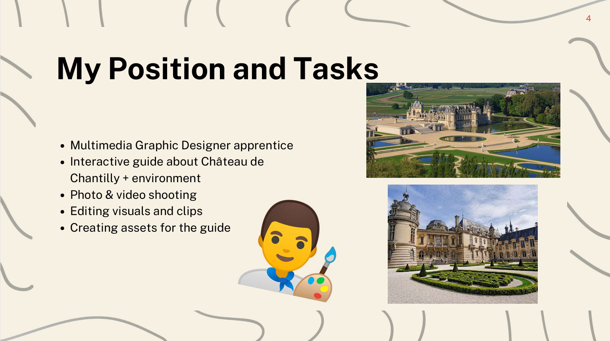

Présenter le contexte
Introduction de Studio Graphis, de son activité et de son environnement professionnel.
AC35.04
Cette présentation orale retrace mon expérience en alternance chez Studio Graphis. Elle met en avant le contexte de l'entreprise, mes missions, les compétences développées ainsi que mon bilan personnel et mes perspectives professionnelles.

Introduction de Studio Graphis, de son activité et de son environnement professionnel.
Présentation de mon rôle, de mes tâches quotidiennes et de mes responsabilités.
Mise en avant des compétences développées, des difficultés et des apprentissages.
Présentation de mes objectifs d’études et de mon projet professionnel.
J’ai conçu l’ensemble du support de présentation, en organisant les informations de manière claire et progressive. J’ai présenté l’entreprise, mon rôle, mes missions, mon expérience professionnelle ainsi que mes perspectives d’évolution.
Cette réalisation montre ma capacité à structurer un discours, à sélectionner les informations importantes et à défendre mon expérience professionnelle devant un public. Le diaporama sert de support visuel pour rendre la présentation plus claire, cohérente et convaincante.
Cette présentation m’a permis de progresser dans ma capacité à m’exprimer en anglais dans un contexte professionnel. Elle m’a également aidé à prendre du recul sur mon alternance, à identifier les compétences développées et à formuler plus clairement mes objectifs pour la suite de mon parcours.